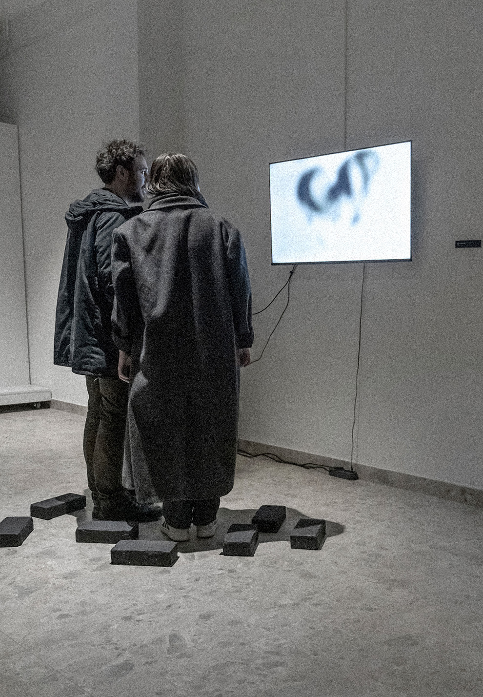
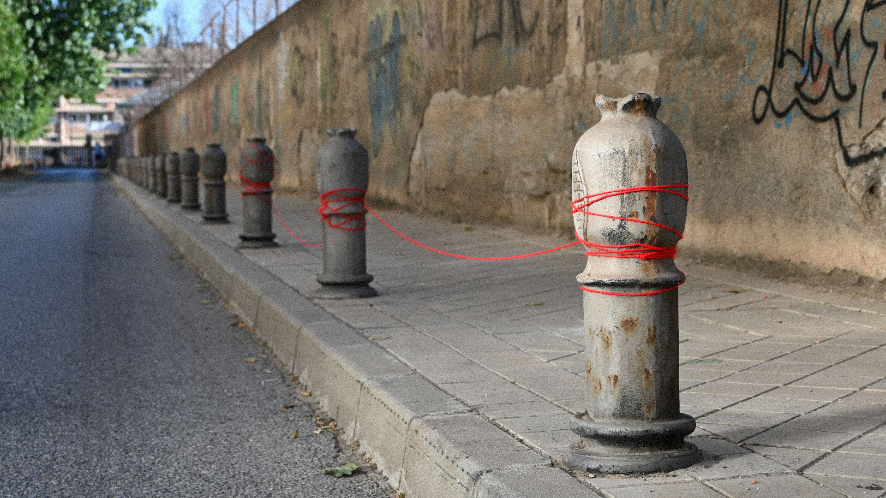
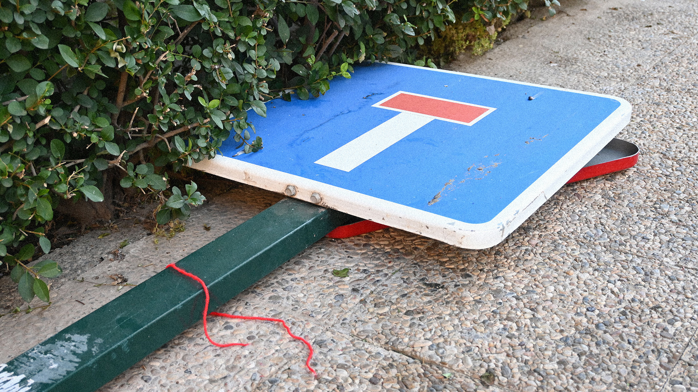
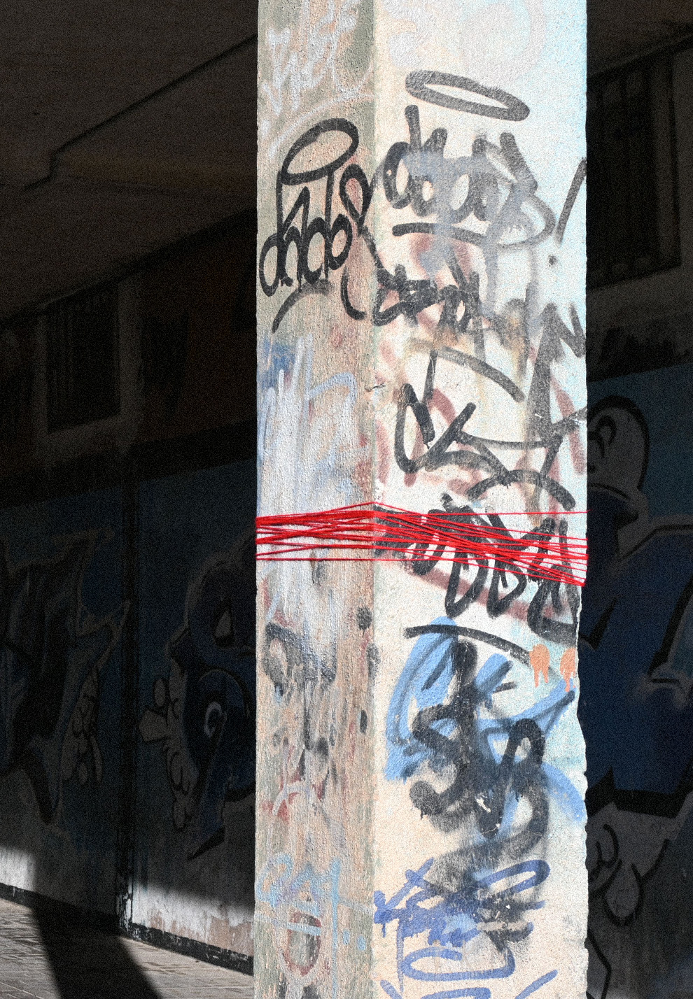
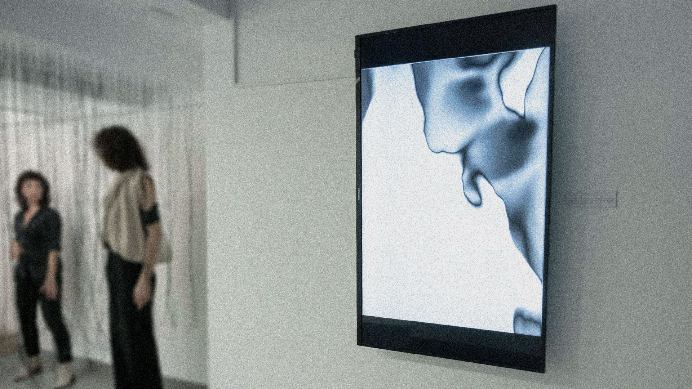
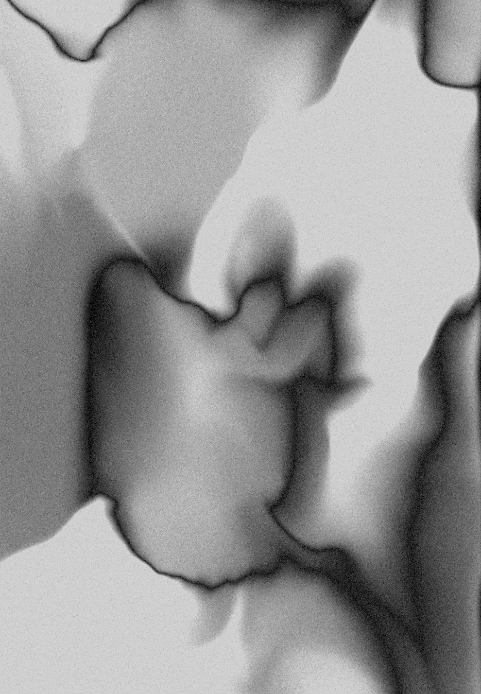

Remains is an interactive installation that explores the relationship between material remnants of the past and the contemporary digital world. The work addresses language as one of humanity's most significant achievements, questioning its emergence, transformation, and potential disappearance. The viewer enters an isolated hybrid space and assumes an active role in directing the process. By reorganizing bricks according to an architectural plan, the participant's actions are tracked by a camera and translated into a digital linguistic message. The viewer thus becomes both constructor and destroyer, witnessing how material actions generate immaterial meaning. The work reveals language as a shared foundation of civilization, shaped through the ongoing interaction between physical remnants and digital traces.
Interactive installation


Installation


Hilo Rojo is an installation that examines the relationship between primitive belief systems and contemporary modes of understanding the world. In modern societies, reality is largely structured through rational , systematic frameworks, often marginalizing the surreal, the spiritual, and the transcendent. This project investigates the possibility of reintroducing these dimensions within a contemporary context. Central to the work is the motif of the red thread, functioning as both a marker of difference and a point of connection. It symbolizes a latent continuity between past and present forms of human experience, suggesting an enduring need for symbolic and ritualistic structures. Through this element, the installation questions the limits of rationalization and proposes the relevance of the irrational and the spiritual in shaping contemporary perceptions of reality.

Interactive installation

The installation View from Above explores individual emotions within a collective experience. The audio-visual environment is shaped by unconscious patterns of behavior and movement, establishing a relationship between the conditioning of the collective and the position of the individual within it.